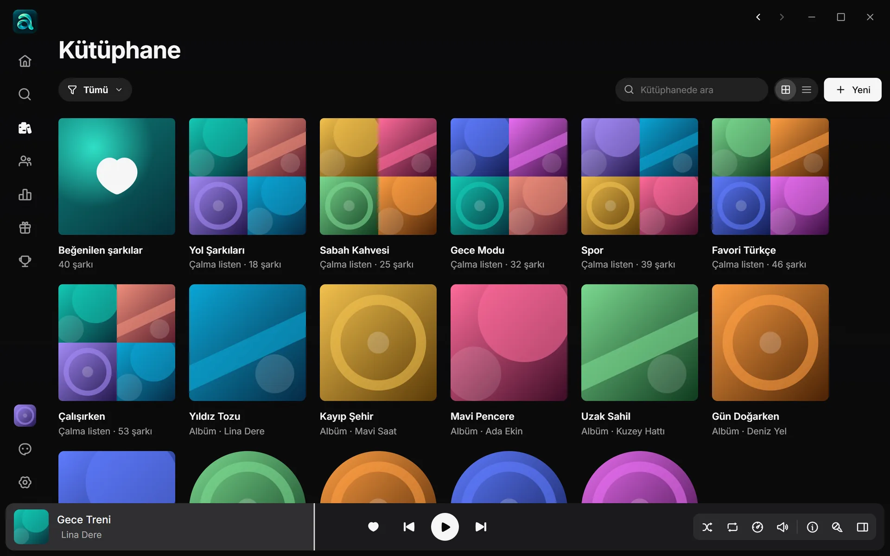
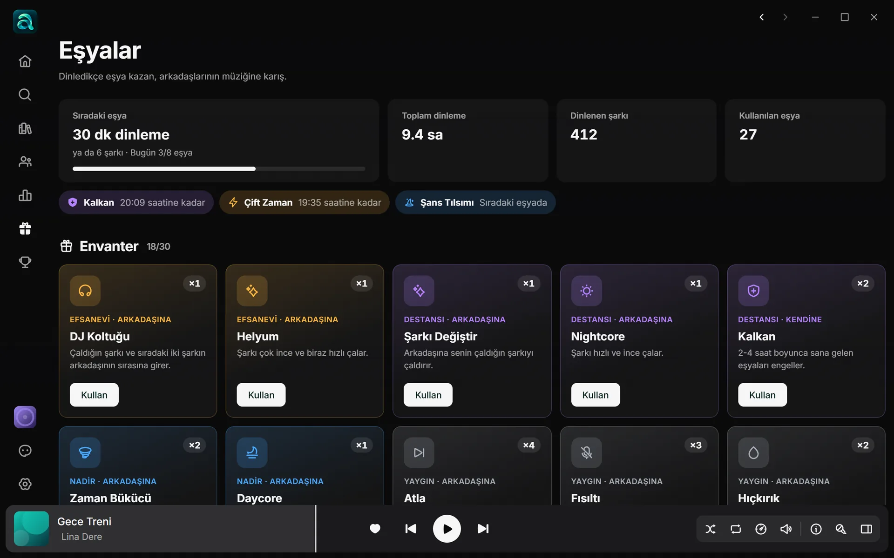
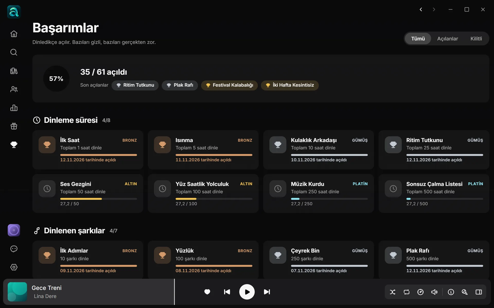
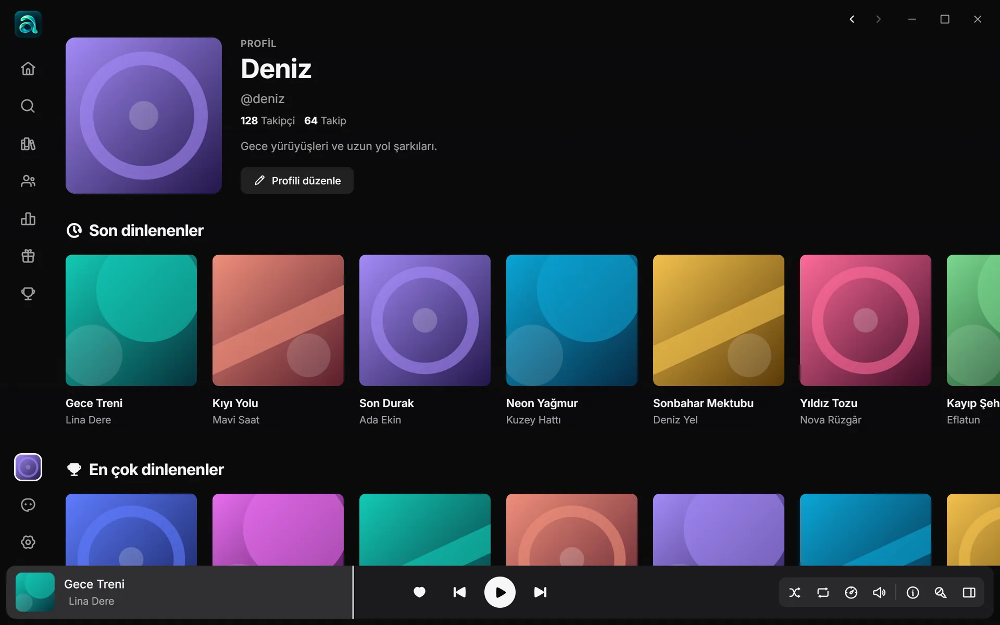
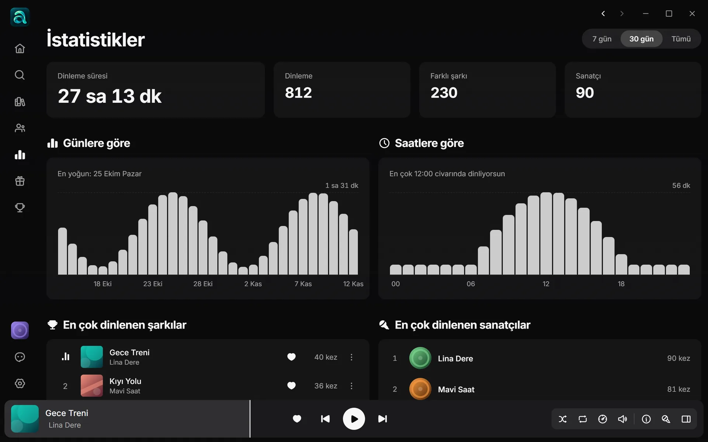

Kütüphane
Her açılışta sana göre bir sayfa
Çalma listelerin en üstte, kaldığın şarkılar ve yeni çıkanlar hemen altında. Dinledikçe altı kişisel Daily Mix hazırlanır, Haftalık Keşifler her hafta henüz dinlemediğin şarkılarla yenilenir. Beğendiklerin, listelerin, albümlerin ve sanatçıların tek bir kütüphanede.
- Daily Mix ve Haftalık Keşifler
- Uygulamadaki herkesin en çok dinledikleri
- Sürükleyip sırala, kapak seç, yinelenenleri temizle

Müzik paylaşınca güzel
Arkadaşlarını takip et, Jam'de aynı şarkıyı aynı anda dinle, dinledikçe eşya ve başarım topla.
Arkadaşlarının müziğine karış
Dinledikçe 46 farklı eşyadan rastgele düşer. Karşılıklı takipleştiğin bir arkadaşına Sincap Sesi, Nightcore ya da Plak Durması gönder; Kalkan'la sana gelenleri engelle. Etkiler en çok bir dakika sürer, kurallar sunucuda denetlenir.

61 başarım, bazıları gizli
Dinleme süresi, seri, çeşitlilik ve sadakat başarımları bronzdan platine dört seviyede. Bazılarının ne olduğu açılana kadar görünmez; bazıları gerçekten zor.


Profil ve Jam
Profilinde son ve en çok dinlediklerin, herkese açık listelerin ve o an çaldığın şarkı görünür. Jam'de bir davet linkiyle arkadaşların aynı şarkıyı seninle eş zamanlı dinler.

İstatistikler
Ne kadar dinlediğini, en yoğun gün ve saatlerini, en çok dinlediğin şarkı ve sanatçıları gör.